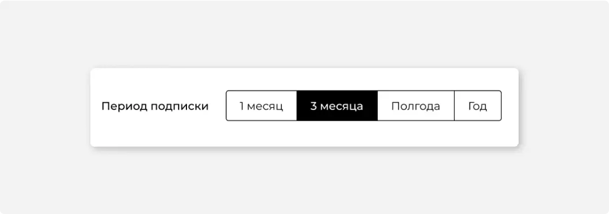
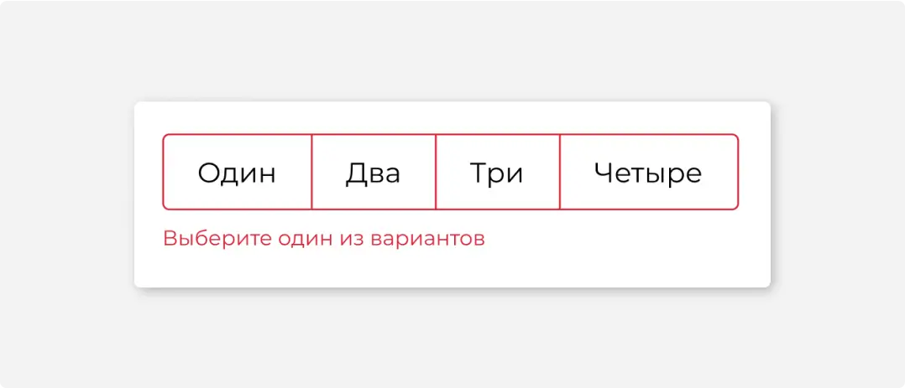

#1
Назначение
Переключатель — это замена группе радиокнопок. Переключатель меньше по высоте, это позволяет делать формы компактнее.
Переключатель используют, когда вариантов выбора немного: от трех до пяти.
Старайтесь не использовать переключатель из двух значений — пользователи не понимают, какой из пунктов выбран.
Не используйте переключатель в качестве навигации, для этого лучше подходят вкладки.
#2
Описание работы
Название переключателя пишут с заглавной буквы и формулируют так, чтобы:
было понятно, что можно выбрать только 1 вариант;
название каждого пункта не содержало повторяющуюся часть.
Избегайте названий пунктов в 3 и более слов. Если сократить названия не получается, используйте группу радиокнопок.
Если переключатель используется для настройки параметров и показывает текущее состояние системы, один из пунктов переключателя должен быть выбран по умолчанию. При желании пользователь сможет вернуть настройку в исходное состояние. Выбранный по умолчанию пункт ставьте первым в списке.
Если переключатель нужен для сообщения каких-то сведений, то по умолчанию может быть не выбран ни один из вариантов.
В переключателе не должно быть пунктов, которые нельзя выбрать. Единственным, для чего может использоваться валидация — указывать на обязательность самого выбора.
#3
Размеры и расположение
Отступы у каждого элемента должны быть одинаковыми. Размеры отступов соответствуют размерам кнопки.
Возможно вертикальное расположение элементов в переключателе.